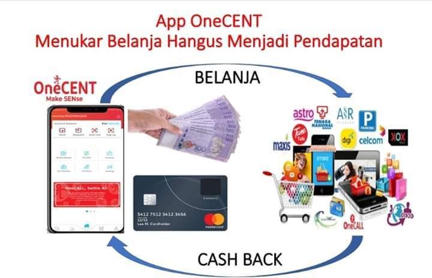

SMART DIGITAL COMMUNITY

PLATFORM FINTECH - ONECENT
PELUANG
MENCIPTA PENDAPATAN SAMPINGAN
MENERUSI APLIKASI ONECENT
Dengan aplikasi mobil OneCENT anda boleh mengitar semula perbelanjaan harian anda menjadi satu pendapatan pasif.
Caranya
bagaimana ?
Hanya daftar sebagai ahli Smart Digital
Community (SDC),
dan download aplikasi OneCENT dari play
store ke dalam HP anda dan gunalah kemudahan yang disediakan.
**
Aplikasi ini tersedia dengan ewallet .
**
Tersedia kemudahan membuat pembayaran menerusi handphone , seperti
topup
**
Membayar bil-bil air, api , bil majlis dengan mudah
**
Menambah jumlah ewallet menerusi online banking di mana sahaja
**
Mendaftar ahli baru dengan senang
**
Memindahkan wang dari wallet kepada walet ahli lain
** Berbelanja
di mana-mana merchant berdaftar & mendapat rebat
**
Memindahkan wang keluar negara di mana sahaja pada bila2 masa
**
Menguna sim kad OneCall (line celcom/tune) dengan kadar yang
jimat
*** Semua
aktiviti pembayaran menerusi ewallet akan mendapat cash
back
***
Mendaftar
ahli baru juga boleh menjana pendapatan
***
Bila
ahli bawahan anda menggunakan ewallet dalam pembayaran , anda
mendapat reward
Lihatlah Penerangan Kempen Go Digital Comunity @ Go Cashless 2020 ONECENT
Boleh kunjungi page kami : www.facebook.com/onecent2020
UNTUK
MENJADI AHLI
SMART DIGITAL COMMUNITY
ISI BORANG DI BAWAH